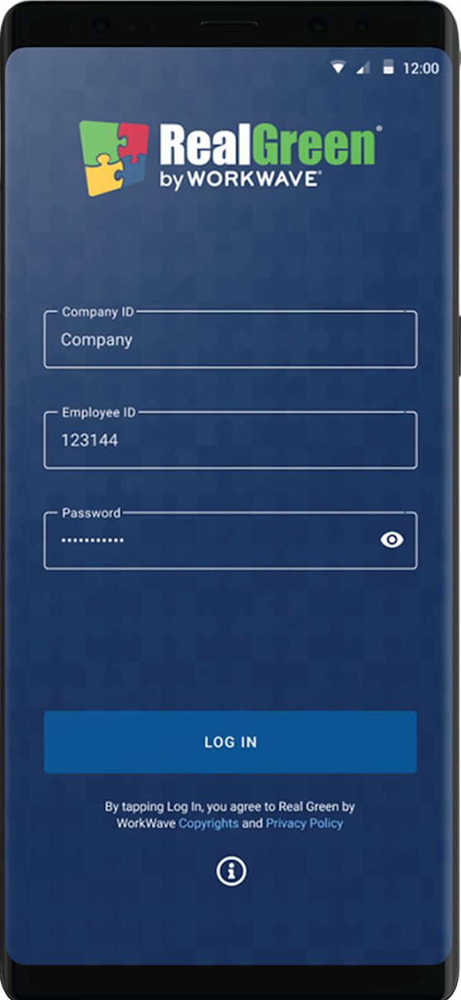
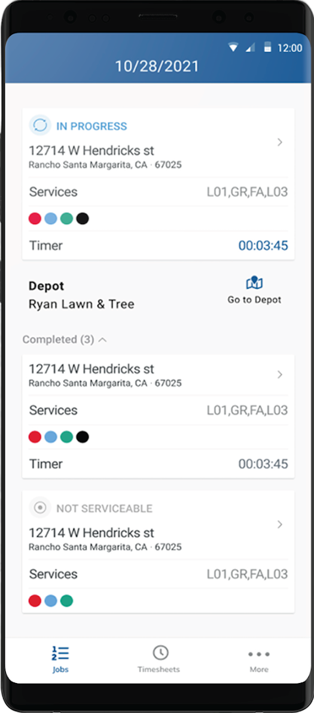
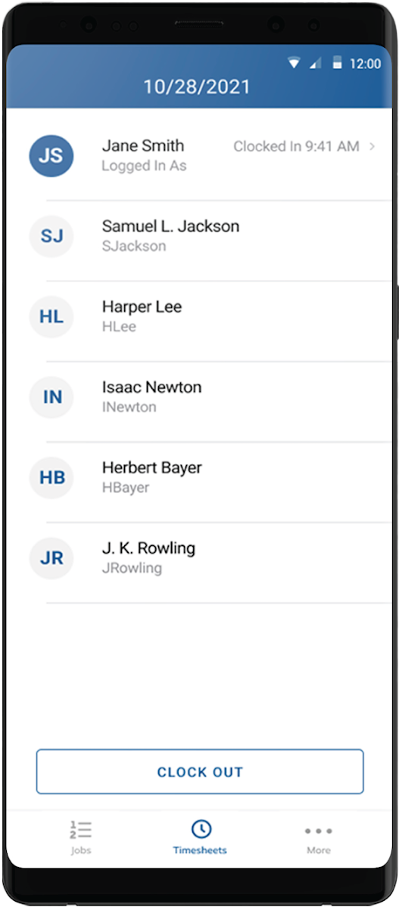

Clock in, crew up
Techs sign in with their company and employee ID. Crew leads see the whole team's timesheet — who's clocked in, since when — and manage clock-outs at day's end.
The back office, riding shotgun.
A productivity app for lawn care and landscaping businesses that connects field technicians to the back office. Crews clock in, load the day's route, review customer history, navigate between stops, and document every job — with or without a signal.



Real Green Systems (by WorkWave) builds the software that runs thousands of lawn care and landscaping businesses. Their field app is where that software meets the truck: technicians sign in with a company and employee ID, pick up the day's schedule, and work stop by stop — starting timers, recording the services performed at each property, flagging jobs that couldn't be serviced, and heading back to the depot when the route is done.
The defining constraint is connectivity. Lawn crews spend their day in suburbs, backyards and rural routes where coverage comes and goes — so every workflow had to run locally first, syncing job documentation, timesheets and status changes back to the office whenever a connection was available.
The result replaces the clipboard entirely: schedules, customer history, navigation and proof-of-service all live on the device the technician already carries.
Built and maintained field-facing features across the job workflow — schedules and job states, timesheets and crew clock-in/out, route and depot navigation, and offline-resilient data flows syncing to Real Green's back office.
The app follows the technician's shift from the first clock-in to the last stop.
Techs sign in with their company and employee ID. Crew leads see the whole team's timesheet — who's clocked in, since when — and manage clock-outs at day's end.
The day's schedule arrives from the back office, sequenced stop by stop, with customer history and the exact service codes sold at each property. One tap navigates to the next address — or back to the depot.
Starting a job starts the timer. Services performed are tracked against the work order; finished stops roll into the completed list, and a locked gate or unpaid account can be flagged "not serviceable" with a reason the office sees immediately.
⏱ In progress · 00:03:45 — every minute accounted forJob notes and statuses captured offline throughout the day sync home as coverage allows. The crew clocks out from the same screen they started on — and the office already has the whole day's story.
Backyards, basements and rural routes don't care about your coverage map. Every workflow writes locally first and syncs opportunistically.
Routes sequenced by the back office, delivered to the truck — in-progress, completed and not-serviceable states at a glance.
Property, program and past-visit context at every stop.
Turn-by-turn to the next job, or back to the depot.
Start-to-finish timing per stop for accurate job costing.
The exact services sold at each property, tracked as performed.
Clock-in/clock-out for the whole crew — leads manage the team's day from one screen.
One C# codebase shipping native iOS and Android — structured for offline resilience and long shifts on modest hardware.